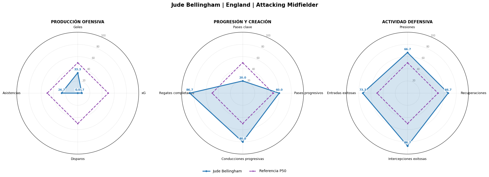
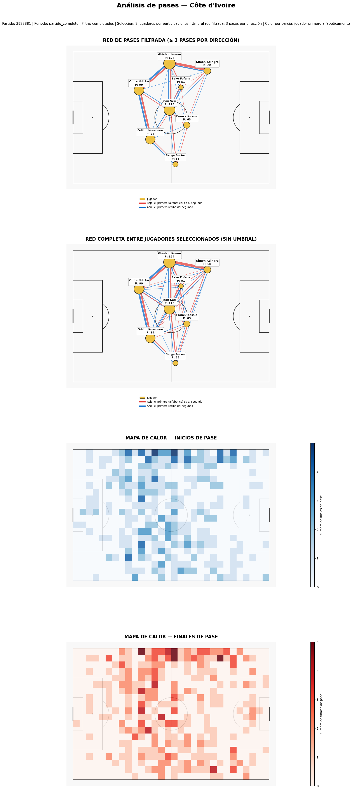
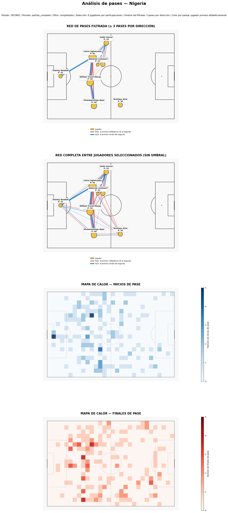
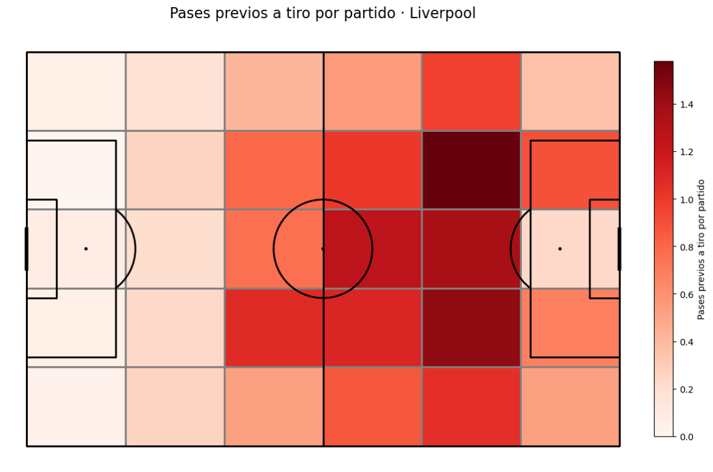
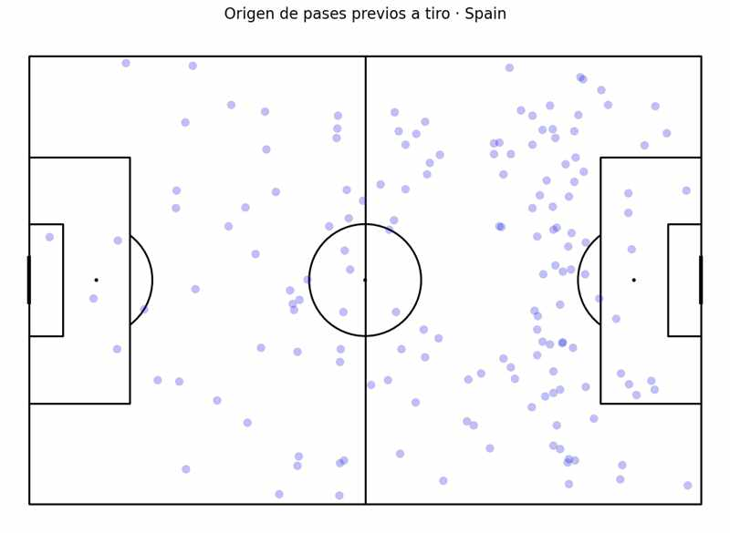
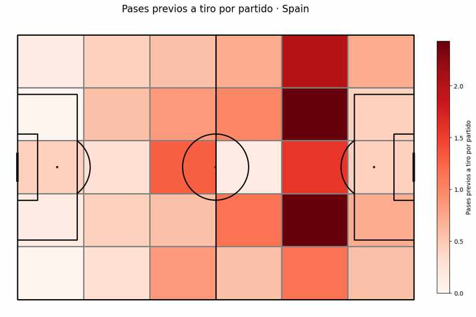
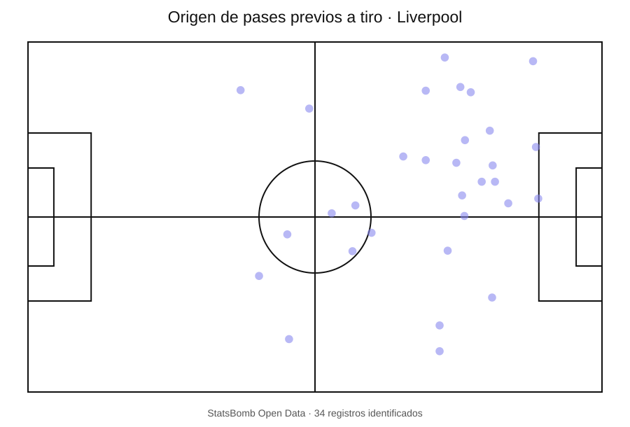
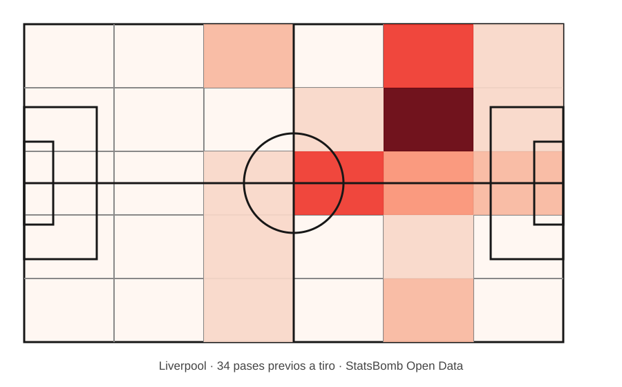

PORTFOLIO / BIG DATA
Análisis de datos aplicado al fútbol.
Una colección de estudios reproducibles para explorar el juego mediante datos, visualizaciones y preguntas tácticas. Los casos se publicarán cuando el código, los gráficos y las interpretaciones estén revisados.
← Volver al portfolioESTRUCTURA DE CADA CASO
Pregunta. Método. Resultado. Interpretación.
Cada análisis incluirá el contexto de los datos, el procedimiento utilizado, la visualización final y una lectura futbolística de los resultados, junto con las limitaciones relevantes.
01BIG DATA · PLAYER PROFILINGRadares comparativosComparación de perfiles individuales mediante métricas y referencias posicionales.
BD-001Bellingham · Radar comparativo por demarcación
01 · Objetivo y pregunta de análisis
Construir una plantilla reproducible para comparar el perfil estadístico de un futbolista con una muestra de referencia definida por demarcación y competición.
02 · Contexto y muestra
Ejemplo de aplicación: Jude Bellingham con Inglaterra en la Eurocopa 2024. Se analizaron 550,88 minutos dentro de la familia posicional Attacking Midfielder. La cohorte quedó formada por 16 futbolistas con un mínimo de 180 minutos.
Los percentiles son relativos a esta cohorte y a estos criterios de selección; no constituyen una clasificación universal de mediapuntas.
03 · Variables e indicadores
El radar reúne 12 indicadores agrupados en producción ofensiva, creación y progresión, y actividad defensiva.
- Producción ofensiva: goles, xG y disparos.
- Creación y progresión: asistencias, pases clave, pases progresivos, conducciones progresivas y regates completados.
- Actividad defensiva: presiones, recuperaciones, intercepciones exitosas y entradas exitosas.
Se combinan conteos y tasas por 90 minutos. Los percentiles se calculan sobre las tasas por 90 de la muestra seleccionada.
04 · Metodología y procedimiento
- Procesamiento de datos de eventos con Python y Jupyter.
- Reconstrucción y control de la información temporal y posicional utilizada.
- Cálculo de 12 indicadores, conteos y tasas por 90 minutos.
- Transformación de las tasas en percentiles relativos a la cohorte configurada.
- Representación en un radar por bloques, con una línea visual fija P50.
05 · Validación técnica
El desarrollo se cerró con tres notebooks diferenciados: plantilla funcional integrada, pruebas de reutilización y auditoría integral. Se revisaron la reconstrucción temporal y posicional, los indicadores, las tasas por 90, los percentiles y la coherencia entre cálculos y visualización.
Las pruebas de reutilización cubrieron tres escenarios con distintas referencias posicionales y competitivas.
06 · Resultado del ejemplo
Percentiles de Bellingham en la cohorte analizada:

La línea P50 del radar es una referencia fija en 50; no representa la media ni la mediana de la cohorte.
07 · Interpretación futbolística
En esta muestra, el perfil presenta mayor presencia relativa en la progresión individual y en varias acciones defensivas que en el remate y la creación directa mediante pase.
- Remate: disparos (P0), xG (P6,7) y goles (P33,3) se sitúan en la parte baja de la cohorte.
- Creación: asistencias (P26,7) y pases clave (P20) quedan por debajo del punto medio; los pases progresivos alcanzan P60.
- Progresión individual: conducciones progresivas (P80) y regates completados (P86,7) son dos de los valores más altos.
- Actividad defensiva: presiones y recuperaciones (P66,7), intercepciones (P86,7) y entradas exitosas (P73,3) muestran valores relativamente altos.
La lectura sugiere un perfil con capacidad para conducir, superar rivales y participar en acciones defensivas, mientras que su volumen de finalización y de generación directa de ocasiones queda por debajo de buena parte de los mediapuntas comparados.
Es una descripción estadística, no una explicación del rol táctico ni de la influencia global del jugador. Para profundizar se necesita contrastar los datos con vídeo y contexto de partido.
08 · Limitaciones y criterios de lectura
- La cohorte contiene 16 jugadores y exige un mínimo de 180 minutos; cambiar la muestra puede modificar los percentiles.
- Percentil 0 en disparos no significa ausencia de disparos: Bellingham registró 2 en 550,88 minutos.
- Las recuperaciones contabilizan Ball Recovery sin recovery_failure = True; no equivalen necesariamente a posesión controlada.
- La progresión se define por avance positivo en X de StatsBomb y no corrige la dirección de ataque por equipo.
- Los eventos no explican por sí solos la intención táctica, la calidad de la decisión ni las instrucciones del jugador.
09 · Recursos técnicos y fuente
El proyecto dispone de tres notebooks maestros para ejecución, pruebas de reutilización y auditoría. Se mantienen en el repositorio técnico privado para preservar los archivos de trabajo y evitar duplicidades.
Fuente de datos: StatsBomb Open Data.
Los datos proceden de StatsBomb Open Data. Se muestra su logotipo como atribución de la fuente; consulta los recursos oficiales de StatsBomb para conocer las condiciones vigentes.
02BIG DATA · PASSING NETWORKSRedes de pasesAnálisis de las relaciones de pase, participación y estructura colectiva.
BD-003Côte d’Ivoire vs Nigeria · Sistema de Interacciones Total
01 · Objetivo y pregunta de análisis
Describir cómo se organiza la circulación del balón e identificar las relaciones de pase entre jugadores.
02 · Contexto y configuración
Partido completo Côte d’Ivoire–Nigeria, MATCH_ID 3923881, con datos de StatsBomb Open Data. Se seleccionaron ocho jugadores por equipo según sus participaciones en el pase.
- Redes y mapas construidos con pases completados.
- Red filtrada con un mínimo de tres pases por dirección.
- Red completa sin umbral entre los ocho jugadores seleccionados.
- Tamaño de nodo según participaciones.
- Mapas de inicios y finales de pase con escala común.
03 · Metodología y procedimiento
- Descarga y lectura de los eventos del partido.
- Identificación y filtrado de los eventos de pase.
- Cálculo de pases ejecutados, recibidos y participaciones por jugador.
- Construcción de redes dirigidas filtrada y completa.
- Cálculo de relaciones entre parejas y distribución espacial de inicios y finales.
- Auditoría de recuentos y comparación descriptiva de ambos equipos.
04 · Variables y estructura del sistema
- Participación individual: pases ejecutados, recibidos y suma de ambas intervenciones.
- Relaciones dirigidas: pases de un jugador hacia otro.
- Relaciones por parejas: intentos, completados y fallidos en cada dirección.
- Distribución espacial: localización de inicios y finales de pase.
La tabla de parejas contabiliza intentos identificables; redes y mapas utilizan pases completados. Son universos distintos.
05 · Resultado y auditoría
Resumen de los recuentos auditados:
| Indicador | Côte d’Ivoire | Nigeria |
|---|---|---|
| Eventos descargados | 2.699 | 2.699 |
| Pases antes del filtro | 464 | 272 |
| Pases válidos utilizados | 388 | 189 |
| Jugadores disponibles | 16 | 15 |
| Jugadores seleccionados | 8 | 8 |
| Conexiones dirigidas antes del umbral (todos los jugadores) | 94 | 91 |
| Conexiones en red filtrada | 35 | 15 |
| Conexiones en red completa | 49 | 39 |
| Pases representados en red filtrada | 272 | 84 |
| Pases representados en red completa | 290 | 119 |
Las 94 y 91 conexiones se calculan sobre todos los jugadores con participación válida. En la selección visual de ocho jugadores, la red completa contiene 49 y 39 conexiones dirigidas; al exigir un mínimo de tres pases en cada dirección de forma independiente, permanecen 35 y 15.
Jugadores con mayor participación:
| Jugador | Ejecutados | Recibidos | Participaciones |
|---|---|---|---|
| Côte d’Ivoire | |||
| Ghislain Konan | 72 | 52 | 124 |
| Jean Michaël Seri | 61 | 54 | 115 |
| Evan Ndicka | 47 | 52 | 99 |
| Odilon Kossounou | 46 | 48 | 94 |
| Nigeria | |||
| Calvin Bassey | 29 | 32 | 61 |
| William Troost-Ekong | 25 | 25 | 50 |
| Oluwasemilogo Ajayi | 17 | 23 | 40 |
| Zaidu Sanusi | 20 | 13 | 33 |
Se muestran los cuatro primeros de cada equipo; el informe técnico contiene los ocho seleccionados.
06 · Visualizaciones del sistema
Resultados gráficos de cada equipo, con redes de pase y representaciones espaciales generadas por los notebooks.


07 · Relaciones entre parejas
Côte d’Ivoire: Konan - Adingra (38), Konan - Ndicka (36), Ndicka - Kossounou (35) y Konan - Seri (23). Konan–Adingra registra 27 y 11 pases por sentido; Ndicka–Kossounou, 18 y 17.
Nigeria: Bassey - Troost-Ekong (17), Ajayi - Troost-Ekong (14), Bassey - Sanusi (10) e Iwobi - Sanusi (9). Bassey–Troost-Ekong registra 8 y 9 pases por sentido.
08 · Interpretación futbolística
Côte d’Ivoire completó 388 pases, frente a los 189 de Nigeria, y generó una red de relaciones más amplia entre los ocho jugadores seleccionados. Antes de aplicar el umbral de recurrencia, ambos equipos presentaban un número parecido de conexiones dirigidas en el conjunto de todos sus jugadores (94 y 91). Al limitar la visualización a los ocho futbolistas seleccionados, la red completa recoge 49 conexiones para Côte d’Ivoire y 39 para Nigeria. Tras aplicar el mínimo de tres pases por dirección, permanecen 35 conexiones marfileñas y 15 nigerianas. La diferencia, por tanto, no está tanto en el número inicial de relaciones distintas como en cuántas alcanzan una frecuencia suficiente para superar el umbral dentro de la selección analizada. En esa estructura destacan Konan y Seri, con 124 y 115 participaciones respectivamente. Su presencia apunta a dos focos importantes de intervención en la circulación, aunque el recuento por sí solo no permite determinar si actuaron como organizadores, apoyos de seguridad o receptores para dar continuidad. Las relaciones entre parejas ayudan a concretar algo más la lectura. El intercambio Konan - Adingra presenta una marcada asimetría (27 pases en un sentido y 11 en el contrario), lo que sugiere una relación con mayor volumen de conexión en una dirección. En cambio, Ndicka - Kossounou registra 18 y 17 pases, un intercambio mucho más equilibrado que resulta compatible con una relación de apoyo recíproco entre ambos centrales. El dato describe la frecuencia y el sentido de la conexión, no la función táctica exacta que desempeñó cada uno. Nigeria presenta una circulación de menor volumen y una red en la que menos relaciones alcanzan el umbral de recurrencia. Bassey (61 participaciones) y Troost-Ekong (50) son los jugadores con mayor intervención entre los seleccionados, seguidos por Ajayi y Sanusi. La relación Bassey - Troost-Ekong suma 17 pases y mantiene un reparto equilibrado (8 y 9 por sentido). Junto con las conexiones de Ajayi con Troost-Ekong y de Bassey con Sanusi, estos datos dibujan un conjunto de relaciones relevantes alrededor de varios defensores. Puede ser una pista sobre dónde se concentró parte de la circulación nigeriana, pero no permite afirmar que el equipo progresara desde esa zona ni que su juego estuviera limitado a ella. La diferencia entre ambos equipos parece residir, por tanto, tanto en la cantidad de pases como en la continuidad de las conexiones que se establecieron entre los ocho jugadores seleccionados. Côte d’Ivoire consiguió sostener un entramado más amplio de relaciones repetidas; Nigeria mostró menos conexiones recurrentes, aunque algunas de sus parejas principales mantuvieron intercambios equilibrados. Para saber qué significado tuvo esa diferencia en el juego habría que comprobar hacia dónde progresaron esas conexiones, qué opciones ofrecía el receptor después de recibir y cómo se comportaban los equipos sin balón. La red permite localizar relaciones y formular hipótesis; el vídeo y el contexto del partido deben confirmar su función.
Los datos describen volumen, continuidad y reciprocidad de los pases, pero no demuestran por sí solos dominio territorial, superioridad táctica, eficacia de progresión ni calidad de decisión. Los recuentos de parejas incluyen intentos identificables, mientras que las redes y los mapas se construyen con pases completados. La interpretación de las relaciones debe entenderse como una hipótesis de trabajo pendiente de contraste con vídeo y contexto.
09 · Limitaciones y criterios de lectura
- La participación mide volumen de intervención en pases; no equivale a influencia táctica.
- La frecuencia de una conexión no demuestra calidad de decisión ni eficacia de progresión.
- Las relaciones por parejas contabilizan intentos; redes y mapas utilizan pases completados.
- Los mapas no describen la ocupación sin balón ni la generación de ventajas.
- Las conclusiones tácticas requieren contraste con vídeo y contexto del partido.
10 · Recursos técnicos y fuente
Los notebooks completos y archivos de trabajo se conservan en el repositorio técnico privado. Esta ficha pública presenta criterios, resultados y visualizaciones sin duplicar los cuadernos maestros.
Fuente de datos: StatsBomb Open Data.
03BIG DATA · SPATIAL ANALYSISMapas de calorEstudios espaciales sobre la distribución de acciones, zonas de influencia y patrones de actividad.
BD-004Liverpool · Pases peligrosos · Premier League 2015/16
01 · Objetivo y pregunta de análisis
Identificar y representar las ubicaciones desde las que se originan pases completados que preceden a un tiro posterior dentro de la misma posesión.
02 · Contexto y muestra
Caso de validación: Liverpool en Premier League 2015/16, con datos de eventos de StatsBomb Open Data. Se procesaron los 38 partidos de liga.
- 38 partidos procesados correctamente; 0 errores.
- 717 pases identificados y 27 jugadores implicados.
- 203 combinaciones partido-posesión con pases que cumplen los criterios.
03 · Metodología y criterios
- Se consideran pases completados en juego abierto y del mismo equipo.
- El pase y el tiro posterior deben pertenecer al mismo partido, periodo y posesión.
- El tiro debe ocurrir después del pase y dentro de un máximo de 15 segundos.
- Se incluyen todos los pases que cumplen los criterios, no solo el último antes del tiro.
- Se representa el origen del pase en una cuadrícula de 6 × 5 zonas.
- La intensidad se normaliza por el número de partidos procesados, incluidos aquellos sin pases válidos.
04 · Resultados, visualización y auditoría
| Indicador | Resultado |
|---|---|
| Partidos procesados | 38 |
| Pases identificados | 717 |
| Jugadores implicados | 27 |
| Combinaciones partido-posesión | 203 |
| Registros válidos en auditoría exhaustiva | 717/717 · 100 % |
| Coordenadas fuera del campo | 0 |
| Duplicados | 0 |
| Promedio por partido | 18,87 |

La suma de las intensidades del mapa coincide con el promedio de pases por partido: 717 / 38 = 18,87. La auditoría manual de una muestra de diez registros también se completó.
05 · Interpretación futbolística
En el mapa de Liverpool 2015/16 se aprecia una concentración claramente mayor en la mitad avanzada del campo representado. Las celdas más intensas se agrupan aproximadamente entre X=60 y X=100, con focos especialmente marcados en el corredor X=80–100 y en las franjas Y=16–32 y Y=48–64. En cambio, las zonas de inicio más próximas al fondo propio (X=0–40) presentan una frecuencia sensiblemente menor. La distribución sugiere que muchas secuencias de esta muestra incorporaron pases desde sectores adelantados, tanto en zonas interiores como en corredores laterales/intermedios, antes de acabar en un tiro. Esto puede ser compatible con una circulación que consigue instalarse en campo rival y conectar desde posiciones avanzadas; también invita a estudiar si esos sectores funcionan como plataformas recurrentes para activar la fase final de las posesiones. No obstante, el gráfico no permite afirmar por sí solo que Liverpool dominase territorialmente, que progresase mediante esos pases ni que las zonas más intensas fueran las más eficaces: para comprobarlo habría que relacionar origen y destino, tipo de pase, receptor, secuencia completa, ubicación y calidad del tiro, además del contexto de cada partido. La lectura es, por tanto, una hipótesis espacial útil para orientar el análisis de vídeo y futuras comparaciones, no una conclusión causal.
La relación temporal y de posesión no demuestra que el pase haya causado la ocasión ni que sea una asistencia. El mapa identifica asociaciones dentro de una secuencia, no mide por sí solo la calidad de la decisión ni la peligrosidad causal del pase.
06 · Limitaciones y criterios de lectura
- El criterio identifica pases seguidos por un tiro en un máximo de 15 segundos dentro de la misma posesión.
- Se incluyen todos los pases elegibles de la secuencia; no equivale a contar asistencias ni únicamente el último pase.
- La visualización muestra el origen del pase, no el destino ni la ubicación del tiro.
- La frecuencia espacial no explica por sí sola la intención, la calidad del pase ni el resultado de la finalización.
- Las coordenadas de StatsBomb se utilizan en su orientación original; no se invierte el eje ni se transforma la dirección atacante.
07 · Recursos técnicos y fuente
El desarrollo incluye un notebook maestro configurable para seleccionar competición, temporada, equipo y modalidad de análisis. La auditoría del partido Liverpool–Arsenal (13/01/2016) se documenta como una validación independiente; sus resultados no se mezclan con la muestra de temporada.
Fuente de datos: StatsBomb Open Data.
BD-004 · CASOEspaña · Eurocopa 2024
Estudio de competición completa de España en la Eurocopa 2024. Se aplica la plantilla BD-004 previamente validada con Liverpool, manteniendo los mismos criterios de selección y auditoría.
160 pases identificados · 7 partidos · 21 jugadores · 45 combinaciones partido-posesión · 160/160 registros validados.
01 · Objetivo y alcance
Identificar y representar las zonas de origen de los pases completados de España que preceden a un tiro posterior del mismo equipo, dentro de una misma posesión y periodo, con una ventana temporal máxima de 15 segundos.
La unidad de observación es cada pase que cumple la regla. Se contabilizan todos los pases elegibles de la secuencia, no solo el último pase, por lo que el indicador no equivale al número de asistencias.
02 · Contexto y muestra
- Competición: Eurocopa 2024 (StatsBomb competition ID 55).
- Temporada: 2024 (StatsBomb season ID 282).
- Equipo de referencia: España.
- Muestra: los siete partidos disputados por España en el torneo.
- Rivales: Croacia, Italia, Albania, Georgia, Alemania, Francia e Inglaterra.
Distribución por partido: Georgia 58; Italia 24; Alemania 21; Croacia 18; Albania 18; Inglaterra 11; Francia 10.
03 · Metodología y criterios de selección
- Se seleccionan pases completados de España en juego abierto (Regular Play).
- El pase y el tiro posterior deben pertenecer al mismo partido, equipo, periodo y posesión.
- El tiro debe aparecer después del pase y producirse dentro de un máximo de 15 segundos.
- Se incluyen todos los pases que cumplen la regla, no únicamente el último pase previo al tiro.
- La ubicación representada es el origen del pase, en coordenadas StatsBomb de 120 × 80.
- El mapa utiliza una cuadrícula de 6 × 5 zonas y normaliza cada frecuencia por los siete partidos procesados.
- La muestra principal incluye los periodos 1 y 2; las auditorías exploratorias de tiros pueden incluir también las prórrogas.
04 · Resultados y auditoría
| Indicador | Resultado |
|---|---|
| Partidos procesados correctamente | 7/7 |
| Pases previos a tiro identificados | 160 |
| Jugadores participantes | 21 |
| Combinaciones partido-posesión | 45 |
| Primera parte | 83 (51,9 %) |
| Segunda parte | 77 (48,1 %) |
| Promedio por partido | 22,86 |
| Registros válidos en auditoría exhaustiva | 160/160 · 100 % |
| Duplicados | 0 |
| Coordenadas nulas | 0 |
| Coordenadas fuera del campo | 0 |
La suma de las intensidades del mapa normalizado coincide con la media global: 160 pases / 7 partidos = 22,86. Los 160 registros encontraron correspondencia con un tiro posterior válido en la auditoría exhaustiva.


05 · Interpretación futbolística
La distribución temporal es equilibrada: 83 registros en la primera parte (51,9 %) y 77 en la segunda (48,1 %). El volumen de pases seleccionados apenas varía entre mitades, por lo que el informe no sugiere una concentración claramente mayor de estas secuencias en un periodo concreto. Para explicar posibles cambios de comportamiento ofensivo habría que cruzar estos datos con posesión, altura media de recuperación, marcador y calidad de los tiros.
El promedio de 22,86 pases por partido esconde una variabilidad elevada entre encuentros: Georgia concentra 58 registros, mientras que Francia presenta 10. El volumen de secuencias en el partido ante Georgia es, por tanto, muy superior al de los demás encuentros. Una hipótesis es que España pudo acumular más ataques posicionales y secuencias de pase en campo rival ante un rival que defendió más cerca de su área; otra es que el contexto del marcador y el desarrollo del partido aumentaran el tiempo de ataque español. El dato no permite decidir entre esas explicaciones ni concluir que España atacase mejor ante Georgia: para ello habría que normalizar por posesiones y ataques, y contrastar la altura del bloque rival, el marcador y los tiros generados.
El mapa de calor y el mapa de dispersión muestran que los registros no se distribuyen de forma uniforme. La intensidad más marcada aparece en el sector avanzado del lado derecho de la representación, especialmente en dos bandas laterales situadas a ambos lados del carril central; también se aprecia actividad en zonas interiores y en sectores más retrasados. Como hipótesis de juego, esto puede apuntar a una búsqueda recurrente de progresión por los pasillos interiores-laterales (intervalos entre carril central y banda) para acercar el balón a las inmediaciones del área, en lugar de concentrar todas las secuencias en un único carril central. El mapa de dispersión confirma que existe una nube amplia de orígenes, pero con mayor densidad en campo contrario y en el entorno de los pasillos interiores. No obstante, el gráfico representa el punto de inicio del pase, no su destino ni la trayectoria de la jugada: no demuestra que España penetrase efectivamente por esos pasillos ni que llegase al área desde ellos.
Por jugador, Nico Williams lidera la muestra con 21 pases, seguido de Rodrigo Hernández y Fabián Ruiz con 17 cada uno. Marc Cucurella, Dani Olmo y Lamine Yamal registran 13. La presencia destacada de Nico Williams puede ser compatible con una participación frecuente desde el costado izquierdo o desde zonas de amplitud para activar secuencias que terminan en tiro; la de Rodri y Fabián Ruiz sugiere también una participación relevante de los centrocampistas en la circulación previa a la finalización. Son hipótesis de rol que deben comprobarse con coordenadas de recepción, destino del pase, vídeo y ubicación de los tiros, no conclusiones derivadas únicamente del recuento de pasadores.
Precaución espacial importante: el notebook representa las coordenadas originales StatsBomb y no incorpora una transformación explícita para unificar el sentido de ataque de España entre periodos. Por ello, la concentración en el lado derecho del dibujo debe leerse como una zona del sistema de coordenadas, no como prueba definitiva de que España atacase preferentemente por su banda derecha. Antes de atribuir los sectores a banda izquierda/derecha o comparar mitades, hay que normalizar la orientación ofensiva. La lectura también debe contrastarse con vídeo, destinos de pase, progresión, presión rival, secuencia completa, ubicación y xG del tiro, posesiones y marcador.
06 · Limitaciones y criterios de lectura
- La ventana de 15 segundos es una definición operativa configurable, no una definición universal de peligrosidad.
- La misma posesión y la proximidad temporal no demuestran causalidad entre pase y tiro.
- Se contabilizan todos los pases elegibles, incluidos los que no son el último pase ni una asistencia.
- El mapa representa el origen del pase; no muestra destino, receptor, trayectoria ni ubicación o calidad del tiro.
- Los recuentos absolutos entre partidos no están ajustados por posesiones, minutos, volumen de ataque ni estado del marcador.
- La muestra principal se limita a los periodos 1 y 2. La auditoría exploratoria de tiros incluye prórrogas y tiene un universo distinto.
07 · Recursos técnicos y fuente
Notebook maestro BD-004, configurable para competición, temporada, equipo y modalidad (temporada completa o partido concreto). Esta ficha documenta exclusivamente la ejecución de temporada de España en la Eurocopa 2024; el partido España–Inglaterra se presenta en una ficha de caso independiente.
Consultar notebook de auditoría España · Eurocopa 2024 ↗
Fuente de datos: StatsBomb Open Data.
BD-004 · CASOEspaña–Inglaterra · Final Eurocopa 2024
Estudio de partido de la final de la Eurocopa 2024, disputada el 14 de julio de 2024 (MATCH_ID 3943043). España es el equipo analizado; Inglaterra es el rival.
11 pases identificados · 2 en la primera parte · 9 en la segunda · 6 jugadores · 3 posesiones · 11/11 registros validados.
01 · Objetivo y alcance
Localizar y representar el origen de los pases completados de España que precedieron a un tiro posterior de España, dentro de la misma posesión y periodo, con un máximo de 15 segundos entre ambas acciones.
La unidad de observación es cada pase que cumple la regla. Se incluyen todos los pases elegibles de la secuencia, no solo el último pase previo al tiro ni únicamente las asistencias.
02 · Contexto y muestra
- Competición: Eurocopa 2024 (StatsBomb competition ID 55).
- Partido: España–Inglaterra, final del 14/07/2024.
- Identificador StatsBomb: 3943043.
- Equipo analizado: España. Rival: Inglaterra.
- Muestra: un partido, dos periodos y 11 pases seleccionados.
En el partido se registraron 25 tiros: 16 de España y 9 de Inglaterra. El análisis BD-004 de este caso selecciona exclusivamente los pases de España.
03 · Metodología y criterios
- Se consideran pases completados de España en juego abierto (Regular Play).
- Pase y tiro posterior deben pertenecer al mismo partido, equipo, periodo y posesión.
- El tiro debe aparecer después del pase y producirse dentro de un máximo de 15 segundos.
- Se incluyen todos los pases que cumplen la regla, no solo el último pase.
- Se representa el origen del pase en coordenadas StatsBomb de 120 × 80.
- La cuadrícula del mapa de calor es de 6 × 5; al tratarse de un único partido, los recuentos no requieren división adicional por partidos.
04 · Resultados y auditoría
| Indicador | Resultado |
|---|---|
| Partidos procesados | 1/1 |
| Pases previos a tiro | 11 |
| Jugadores participantes | 6 |
| Posesiones representadas | 3 |
| Primera parte | 2 (18,2 %) |
| Segunda parte | 9 (81,8 %) |
| Registros confirmados | 11/11 · 100 % |
| Duplicados | 0 |
| Coordenadas nulas | 0 |
| Coordenadas fuera del campo | 0 |
| Pases por partido | 11,00 |
Distribución individual: Dani Olmo 3; Nico Williams 3; Robin Le Normand 2; Aymeric Laporte 1; Álvaro Morata 1; Dani Carvajal 1.
La auditoría exhaustiva contrastó los 11 pases con los eventos originales: los 11 tienen un tiro posterior válido. No se detectaron duplicados ni coordenadas nulas o fuera del campo.
05 · Interpretación futbolística
La muestra se concentra temporalmente en la segunda parte: 9 de los 11 pases (81,8 %) aparecen tras el descanso. Este reparto describe la distribución de las secuencias seleccionadas, pero no demuestra por sí solo un cambio de rendimiento o de comportamiento ofensivo; habría que contextualizarlo con posesiones, ataques, marcador y tiempo efectivo de juego.
Por jugador, Dani Olmo y Nico Williams registran tres pases cada uno; Robin Le Normand, dos; y Laporte, Morata y Carvajal, uno cada uno. Los recuentos identifican a los participantes en estas secuencias, pero no permiten atribuirles por sí solos un rol causal ni valorar la calidad de sus decisiones.
La dispersión espacial muestra orígenes variados, con una concentración más visible en sectores adelantados del campo representado. El mapa de calor destaca una celda con cuatro registros y otras zonas con menor frecuencia. Esto permite localizar áreas recurrentes de inicio de pases asociados a tiros, pero no reconstruir la trayectoria de ataque.
Las coordenadas se mantienen en la orientación original de StatsBomb, sin normalizar el sentido de ataque por periodo. Por ello, no debe traducirse la posición del gráfico a banda derecha o izquierda real. El mapa muestra el origen del pase, no su destino, receptor, trayectoria ni la ubicación o calidad del tiro.
06 · Limitaciones
- La ventana de 15 segundos es una definición operativa, no una medida universal de peligrosidad.
- La coincidencia de equipo, posesión y proximidad temporal no demuestra causalidad.
- La muestra corresponde a un único partido y no debe generalizarse a toda la Eurocopa.
- El mapa representa exclusivamente el origen del pase; no informa sobre destino, receptor, progresión ni calidad de la finalización.
- La orientación no está normalizada entre periodos; no se deben inferir bandas reales a partir de la posición horizontal del gráfico.
07 · Recursos técnicos y fuente
Caso individual generado con la plantilla maestra BD-004 en modalidad de partido concreto. La ejecución corresponde a España como equipo analizado, no a Inglaterra.
Consultar repositorio técnico BD-004 ↗
Fuente de datos: StatsBomb Open Data.
BD-004 · CASOLiverpool–Arsenal · Premier League 2015/16
Estudio independiente del encuentro disputado el 13 de enero de 2016 (MATCH_ID 3754305). El análisis toma a Liverpool como equipo de referencia y mantiene esta muestra separada del estudio de temporada completa.
34 pases identificados · 11 en la primera parte · 23 en la segunda · 10 jugadores · 9 posesiones.
01 · Objetivo y alcance
Localizar y representar el origen de los pases completados de Liverpool que precedieron a un tiro posterior del mismo equipo, dentro de la misma posesión y periodo, con un máximo de 15 segundos entre ambas acciones.
La unidad de observación es el pase que cumple la regla de selección. No se limita al último pase de la secuencia ni equivale necesariamente a una asistencia.
02 · Contexto y muestra
- Competición: Premier League 2015/16.
- Partido: Liverpool–Arsenal, 13/01/2016.
- Equipo analizado: Liverpool.
- Identificador StatsBomb: 3754305.
- Muestra: un partido, dos periodos y 34 pases seleccionados.
03 · Metodología y criterios de selección
- Se seleccionan pases completados de Liverpool en juego abierto (Regular Play).
- El pase y el tiro posterior deben corresponder al mismo partido, equipo, periodo y posesión.
- El tiro debe producirse después del pase, dentro de una ventana máxima de 15 segundos.
- Se incluyen todos los pases que cumplen la regla, no solo el último pase previo al tiro.
- La ubicación representada es la coordenada de origen del pase en el sistema StatsBomb (120 × 80).
- El mapa de calor divide el terreno en 6 columnas por 5 filas; al tratarse de un único partido, los valores son frecuencias del encuentro, no promedios de temporada.
04 · Resultados y visualizaciones
| Indicador | Resultado |
|---|---|
| Pases previos a tiro identificados | 34 |
| Primera parte | 11 (32,4 %) |
| Segunda parte | 23 (67,6 %) |
| Jugadores participantes | 10 |
| Posesiones representadas | 9 |
| Correspondencia pase–tiro validada | 34/34 · 100 % |
| Eventos duplicados | 0 |
| Coordenadas fuera del campo | 0 |


La segunda parte concentra 23 de los 34 registros (67,6 %), frente a 11 (32,4 %) en la primera. La distribución espacial no es homogénea: el foco de mayor frecuencia reúne 8 pases en una celda del sector avanzado, y aparecen otras concentraciones de 5 registros en dos celdas próximas. La lectura debe hacerse sobre el origen del pase y no sobre el destino o la posición del remate.
05 · Interpretación futbolística
El mapa muestra que los pases que cumplen el criterio se originan con mayor frecuencia en sectores avanzados del campo, especialmente en el intervalo longitudinal aproximado X=80–100. La celda más intensa concentra 8 registros (23,5 % de la muestra), mientras que otras dos celdas alcanzan 5 registros cada una (14,7 %). Esto señala zonas recurrentes de origen de pases dentro de las secuencias que acabaron con un tiro en la misma posesión.
La distribución es compatible con una presencia relevante de Liverpool en campo rival antes de algunas finalizaciones, y permite formular una hipótesis de análisis: revisar en vídeo cómo se generan y conectan las acciones desde esos sectores avanzados, quién recibe y qué ocurre después del pase. Sin información complementaria sobre destinos, receptores, progresión, presión rival y calidad del tiro, no puede concluirse que esas zonas sean las más eficaces ni que los pases hayan causado una ocasión de mayor valor.
El mayor volumen en la segunda parte indica que más registros cumplen la regla temporal y de posesión en ese periodo. No demuestra por sí solo un aumento de dominio, intensidad ofensiva o calidad de las ocasiones: para sostener esas afirmaciones habría que relacionar estos datos con el volumen total de posesiones, tiros, xG y contexto del partido.
06 · Auditoría y consistencia de datos
- 34 de 34 pases encontraron correspondencia con un tiro posterior válido (100 %).
- No se detectaron eventos duplicados.
- No se detectaron coordenadas fuera de los límites StatsBomb (X: 0–120; Y: 0–80).
- Los 34 registros corresponden a Regular Play; los campos críticos de identificación, periodo, posesión y coordenadas no presentan nulos.
La auditoría valida la aplicación de la regla de selección y la integridad de los registros; no valida la calidad táctica de cada pase ni la peligrosidad real de cada tiro.
07 · Limitaciones y criterios de lectura
- La ventana de 15 segundos es una definición operativa configurable, no una definición universal de peligrosidad.
- La misma posesión y la proximidad temporal no prueban causalidad entre pase y tiro.
- Se contabilizan también pases que no son el último pase ni una asistencia.
- El mapa representa el origen del pase; no muestra destino, receptor, trayectoria ni ubicación o calidad del tiro.
- La muestra corresponde a un único partido y no permite generalizar a toda la temporada.
Este caso es independiente del estudio de Liverpool 2015/16 de 38 partidos y 717 pases. No deben sumarse ni compararse directamente ambas muestras.
08 · Recursos y fuente de datos
Notebook de auditoría y resultados reproducibles disponibles en el repositorio técnico.
Consultar notebook del caso Liverpool–Arsenal ↗
Fuente de datos: StatsBomb Open Data.
BD-002Mapa de calor individual · Estudio pendiente
Estudio en preparación: distribución espacial de las intervenciones de un futbolista, con selección configurable de jugador, equipo, partido o periodo. Se publicará tras completar su desarrollo y auditoría.
02PASSING ANALYSISPases y progresiónCaso pendiente de desarrollo y validación.
03EXPECTED GOALSxG acumulado y por tramosCaso pendiente de desarrollo y validación.
BD-001, BD-003 y BD-004 cuentan con fichas públicas y validación técnica documentada. Los casos restantes siguen en preparación.
SIGUIENTE PASO
Del notebook a un caso de estudio claro y reproducible.
Los análisis se incorporarán progresivamente, priorizando la claridad metodológica y la utilidad futbolística.
Contacto profesional ↗